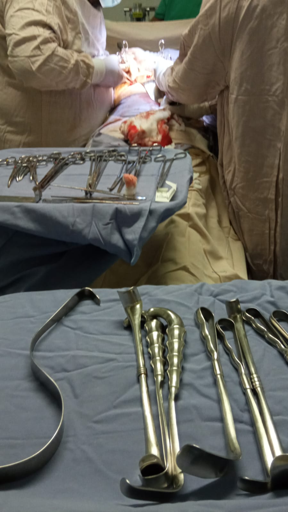

Mi nombre es Dulce María, soy estudiante en la facultad de psicología en la Universidad Nacional Autónoma de México, tengo 21 años, también tengo dos hermanos menores.
Soy auxiliar de enfermería por medio de red Conocer, con lo cual pude obtener un trabajo en clínica particular dónde me hacía cargo de una clínica pequeña en donde llevaba a cabo actividades como toma de signos vitales, apoyo en consultorio, realización de curaciones, aplicación de inyecciones, colocación de venoclisis (canalización), circulante en quirófano, enfermera de cuidados básicos a los pacientes de post quirúrgicos, esterilización de equipo quirúrgico, entre otras actividades.
Mi inclinación a la psicologia surgió gracias a la relación que tiene con la enfermería, realice el examen de seleccion a licencitura en la UNAM el periodo pasado en 2023, posterorirmente al obtener resultados positivos inicie a cursar el primer semestre en agosto. Actutalemnte estoy inscrita en el sistema de universidad abierta en la Facultad de Psicologia en Ciudad Universitaria (CU).
Ajo (axolote)
Julio (hamster)
Shadow (erizo)